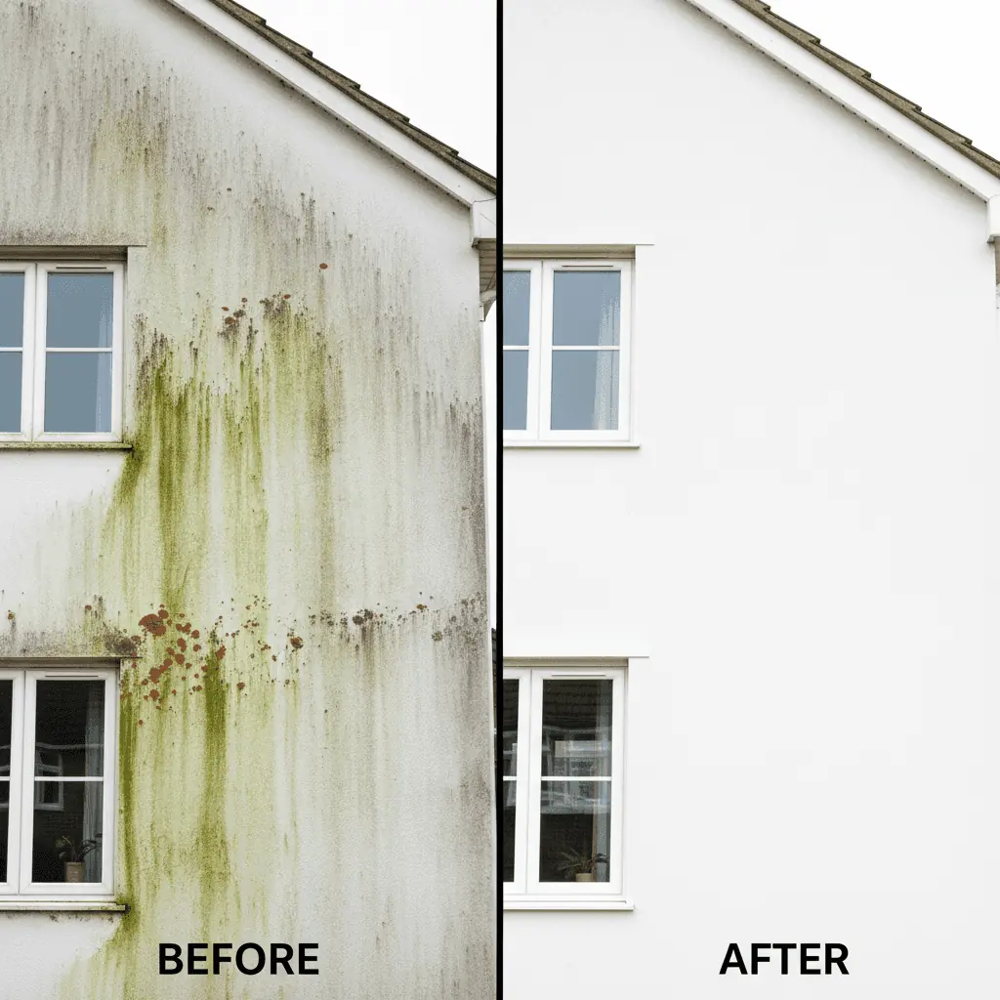

Expert Render Cleaning & Soft Washing
Rendered walls are prone to green algae growth and black staining, especially in Surrey's damp climate. We provide professional render cleaning in Redhill, Reigate and across Surrey using soft washing techniques to safely remove all organic growth without damaging your render or forcing water into your walls.
Unlike high-pressure washing (which can damage render), soft washing uses low pressure combined with specialist cleaning solutions to kill algae, moss, and bacteria at the root. This provides longer-lasting results and protects your property. Our render cleaning cost guide explains pricing by render type, and our guide on pressure washing vs jet washing covers the different cleaning methods in more detail.
Why Not DIY?
High-pressure washing can strip render, crack paint, and void manufacturer warranties. I use soft washing — low pressure with specialist biocides that kill algae at the root without damaging your render.
Spring 2026: Our busiest season is here. Book now to secure your preferred date — slots are filling fast across Surrey.
What is Soft Washing?
Soft washing is a gentle cleaning method specifically designed for delicate surfaces like render, painted walls, and building facades. We use:
- Low Pressure Application - 10-20% of standard pressure washing force
- Specialist Biocides - Kill algae, moss, and lichen at root level
- Longer-Lasting Results - Treats the cause, not just the symptoms
- Safe for Render - No risk of damage or water ingress
See the Difference

A typical render transformation in Surrey
Render Types We Clean
- K-Rend and modern acrylic renders
- Traditional sand and cement render
- Pebbledash and roughcast
- Painted render
- Monocouche render
Common Render Problems
Green Algae Growth
The most common issue in Surrey. Green algae (Gloeocapsa magma) thrives on north-facing and shaded walls, creating unsightly green or black streaks. Similar growth affects driveways and patios - read our moss and algae removal guide for prevention strategies.
Black Staining
Dark streaks caused by algae, pollution, and organic matter. Particularly noticeable on white or light-coloured renders.
Red Algae
Less common but creates distinctive red/pink staining on render surfaces.
Our Render Cleaning Process
1. Inspection
We assess render condition, identify problem areas, and check for any existing damage.
2. Protection
Windows, doors, and landscaping are protected before treatment begins.
3. Biocide Application
Specialist cleaning solution is applied at low pressure to kill organic growth.
4. Dwell Time
Solution works for 15-30 minutes to penetrate and kill growth at root level.
5. Gentle Rinse
Low-pressure rinse removes dead growth and reveals clean render.
Service Areas
I provide render cleaning throughout Redhill, Reigate, Horley, Dorking, Banstead, Epsom and all Surrey. View all areas
Get Your Free Render Cleaning Quote
Every property is different - size, render type, condition, and the extent of algae growth all affect the final price. That's why we provide free, no-obligation quotes tailored to your specific property. While we're at your home, consider combining render cleaning with driveway cleaning or patio cleaning for a complete property refresh.
With our 2-hour callback guarantee, you won't be left waiting. Submit a quote request and we'll call you within 2 hours during business hours (Mon-Sat 8am-6pm) to discuss your requirements and provide accurate pricing. Request your free quote now.